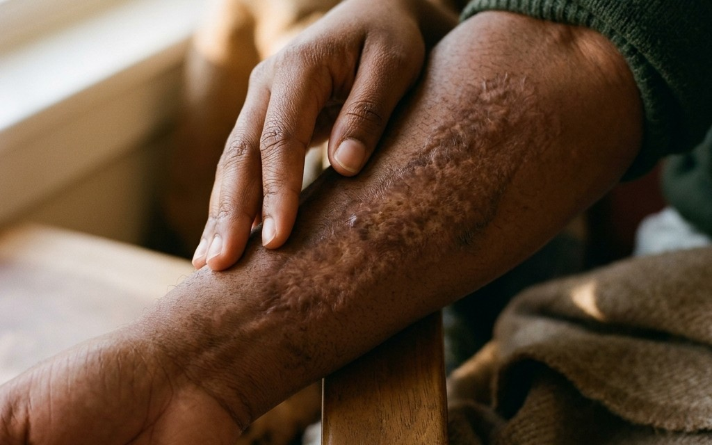

Journal
Straight talk, in plain language.
Clear, evidence-based guides on burns, scars, hair, skin and weight, written for Black and melanin-rich skin.

Burn first aid: what to do in the first 20 minutes
Cool, cover, call: the steps that change how a burn heals, and the home remedies that make it worse.
Traction alopecia: when braids, weaves and ponytails take your hairline
How tension damages follicles, how to spot it early, and what can still grow back.

GLP-1 weight loss and your hair, muscle and skin
What is normal, what is not, and how to lose weight without losing the rest of you.

Sunscreen for Black skin: yes, you need it
Why melanin is not a substitute for SPF, and how to pick one that does not leave a cast.

Keloids explained: why cutting alone often fails
Keloid versus hypertrophic scars, who is at risk, and the combination approach that works better.
Begin here
Have a question we have not answered?
Ask at your consultation, and it may become the next article.